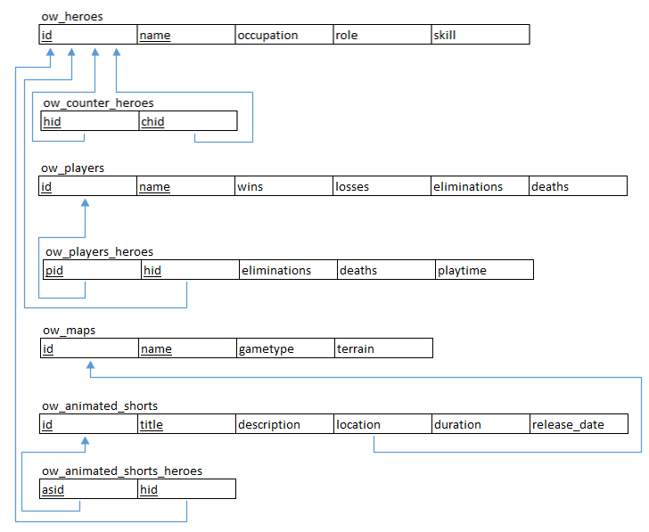

Welcome!
Our database represents the Overwatch universe. Overwatch is a team based first person shooter video game with multiple heroes, game modes, and maps. Animated shorts have also been made detailing the backstories of some of the heroes in the game. This gave us a good number of options for entities and relationships in the Overwatch universe. The complexity and obvious relationships between the different entities makes the Overwatch universe a good candidate for a database.
ER Diagram

Schema
Entities
- Heroes - have names, occupations, roles (roles can be offense, defense, support, or tank) and skill difficulties.
- Players - have names(Gamer Tags), wins, losses, eliminations and deaths. Overwatch is a video game, players are entities that can play Heroes.
- In-Game Maps - there are multiple maps on which the game can be played, these represent physical locations in the Overwatch world. Attributes include name, gametype (can be Escort, Hybrid, Assault, Control, and Arena) and terrain.
- Animated Shorts – The heroes each have backstories, animated shorts have been made and are being made detailed these backstories. Each animated short contains one or more heroes. Attributes include title, description, location, duration, and release date.
Relationships
- Heroes – Heroes is a many-many relationship. A Hero can be countered by multiple Heroes and a Hero can counter multiple Heroes. The database will list a Heroes top 3 Counter Heroes.
- Players – Heroes is a many-many relationship. A player can play many Heroes, Heroes can also be played by many Players. The database will list a player’s top 3 most played Heroes and the amount of time each one has been played.
- Animated Shorts – Heroes is a many-many relationship. An Animated Short can have multiple Heroes featured in it and a Hero can be in multiple Animated Shorts.
- Animated Shorts – Maps/Location is a one-many relationship. All Animated Shorts produced thus far have only been portrayed in one location or map while a map can be used in multiple shorts. For instance, the shorts Hero and Infiltration are both portrayed on the map Dorado.